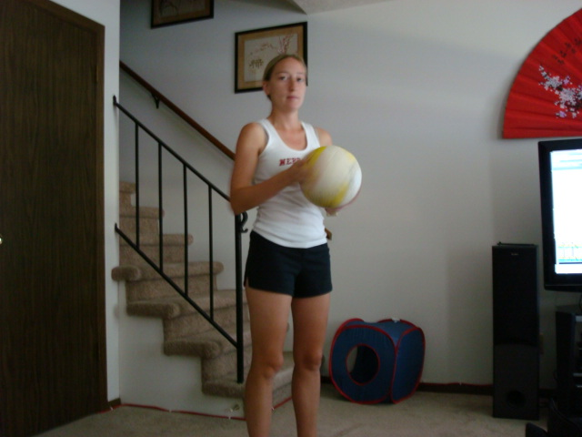
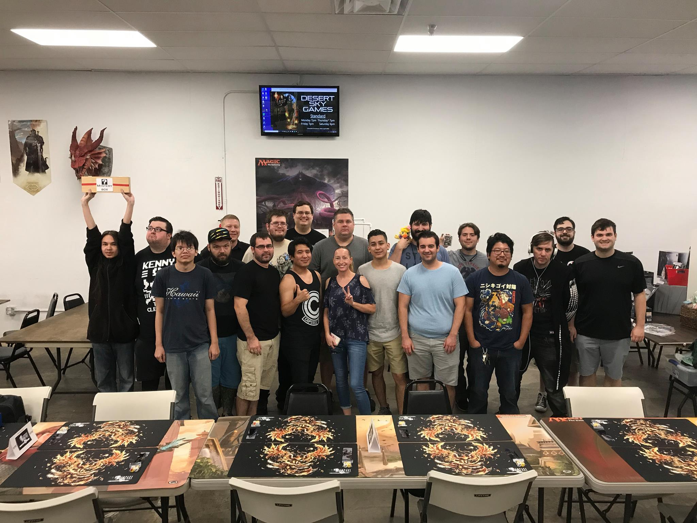
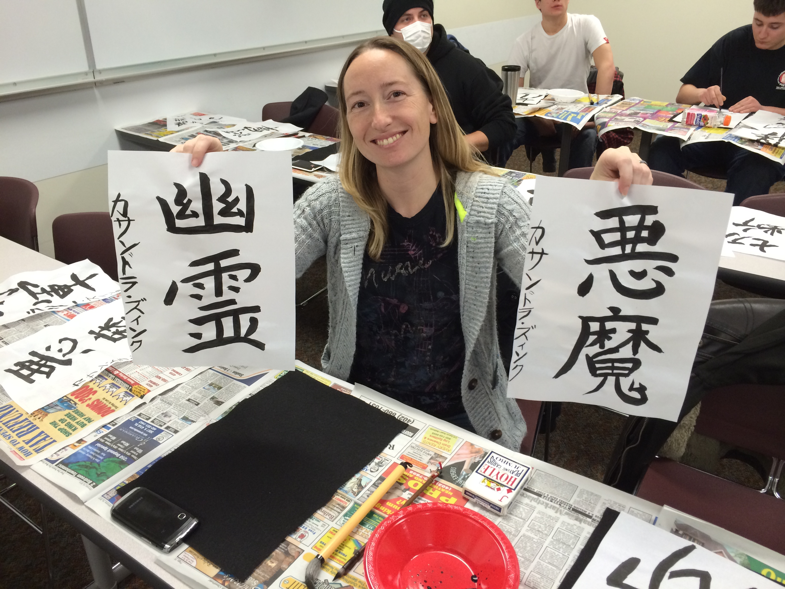

Hobbies
-

Volleyball
- Cassandra always enjoyed playing sports, but starting at the age of ten she found her passion…volleyball. No one in her family had played volleyball before, but she became infatuated with it after her neighbors installed a sand volleyball court in their backyard. Watching them play motivated her to practice every day. Soon she was playing on different local teams, and eventually in high school she played on the Varsity team her sophomore thru senior years. After graduating, she wanted to still continue playing so she joined different indoor and sand volleyball leagues with friends and her now husband. She and her husband still enjoy playing sand volleyball whenever they can, and also enjoy just bumping around the volleyball in their yard.
Final Fantasy Trading Card Game
- When first moving to Arizona, Cassandra and her husband didn’t know very many people. They both enjoyed video games, one of their favorites being the series Final Fantasy. After moving, they learned that Final Fantasy had a trading card game. While searching for a store that sold the cards, she and her husband stumbled upon a store where a few people were playing the game while they were there. They offered to teach them both how to play, and they’ve both been hooked ever since. Cassandra has since become one of the event organizers for the area, scheduling the local Final Fantasy Trading Card Game circuit events as well as other large stand-alone events. She has also helped her local community gain visibility and they have won giveaways and gained recognition throughout North America. She continues to play the game casually but primarily focuses on event planning, budgeting, and growing the community.
Music
- Music has always been a large part of Cassandra’s life. When she was younger, her parents worked where quite a few music concerts took place and they were always able to attend for free. After catching her first guitar pick, she started to focus on music memorabilia. The musical history behind different items is what she found particularly intriguing. Visiting places like Hard Rock Casino in Las Vegas were like visiting Disney Land for her. She has since began collecting music memorabilia of her own that she has gotten at concerts she has attended, as well as from giveaways at different radio stations. She now has an impressive collection of rock memorabilia that includes a large number of signed posters and cd’s as well as four different signed guitars. One that she is particularly proud of is a guitar signed by Linkin Park that she got in 2008!
Learning Japanese
- When other young kids were infatuated with prehistoric times and dinosaurs, Cassandra had her buried in books about Japanese history and culture. An interest that carried into adulthood, and is also part of the reason a friend introduced her to the man that would become her husband. The two shared a love for Japanese culture. After visiting Japan for their honeymoon, the two began to focus on learning the Japanese language. They took a basic Japanese class at their local community college and began practicing at home. It’s been a long and slow process, but it’s a process that she has enjoyed thoroughly. She is now able to speak and read enough of the language to navigate her way around Japan. She continues to study and hopes that within the next few years she will be able to speak and read the language more fluently.



Career
Venmo Support
City of Chandler, Meter Services
Laser Spine Institute Patient Concierge
Metropolitan Utility District, Supervisor - Remittance Processing and Billing Projects